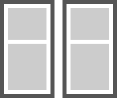

'padding' 特性指定了一个盒子的边白区域的宽度，它应用在所有除了 table-row-group, table-header-group, table-footer-group, table-row, table-column-group 和 table-column 的元素上。 可以使用 'padding' 一次设置盒子所有四边的边白，也可以用 'padding-top', 'padding-right', 'padding-bottom', 'padding-left' 分别设置盒子上右下左的边白区域宽度。
TABLE 元素的 'cellpadding' 属性指定了单元格内容和边框之间的留白数量，单位是像素。 给 TABLE 元素设置 'cellpadding' 属性相当于给 TABLE 中的所有单元格设置了 'padding' 特性。
关于 'padding' 特性的详细信息，请参考 CSS 2.1 规范： 8.4 Padding properties: 'padding-top', 'padding-right', 'padding-bottom', 'padding-left', and 'padding'； 关于 'cellpadding' 属性的更详细信息，请参考 HTML 4.01 规范 cellpadding 中的内容。
在 IE6 IE7 IE8(Q) 中，空单元格会使使用 CSS 设置或 TABLE 元素的 'cellpadding' 属性带来的上下 'padding' 失效。
在某些浏览器下，存在空单元格的表格布局与其它浏览器下的存在差异。
| IE6 IE7 IE8(Q) |
|---|
对于此问题，我们通过以下的测试用例来说明。
分析以下代码：
<style> table { border:5px solid #555; float:left; margin-right:10px; } td { background:#CCC; }
.table td { padding:20px; } </style> <table cellpadding="20"
cellspacing="5"> <tr> <td></td> </tr> <tr>
<td> </td> </tr> </table> <table class="table"
cellpadding="0" cellspacing="5"> <tr> <td></td> </tr>
<tr> <td> </td> </tr> </table>
上面代码创建了两个 TABLE 元素，每个 TABLE 元素均包含两行一列，其中第一行中的 TD 元素是一个空单元格，第二行的包含 ' '。 第一个 TABLE 元素设置了 cellpadding = "20"，而第二组则是为 TD 元素设置了 'padding:20px'。根据 CSS 2.1 规范及 HTML 4.01 规范中对 TABLE 元素 'cellpadding' 属性的描述，代码中所有的单元格都应该拥有边白。
这段代码在各浏览器中的运行效果如下：
| IE6 IE7 IE8(Q) | IE8(S) Firefox Opera Safari Chrome |
|---|---|
|  |
可以看到在 IE6 IE7 IE8(Q) 中，空单元格的上下 'padding' 被忽略了，无论这个 'padding' 是来自 TD 元素的 CSS 特性设定还是 TABLE 元素的 "cellpadding" 属性。
在需要留空的单元格中加一个空格：
| 操作系统版本: | Windows 7 Ultimate build 7600 |
|---|---|
| 浏览器版本: |
IE6
IE7 IE8 Firefox 3.6.3 Opera 10.51 Chrome 5.0.375.9 dev Safari 4.0.5 |
| 测试页面: | |
| 本文更新时间: | 2010-07-12 |
TABLE cell padding 消失 边白 表格 单元格 空